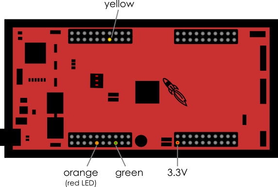

LED Blink Codes¶
The LaunchPad itself has two usable LEDs (red and blue), however, they can be hidden below the J1 BoosterPack. Therefore we are using three additional LEDs (red, yellow, green) that can be connected to the GPIOs 12 (red), 13 (yellow) and 22 (green) and the 3.3V pin:
The red LED is synchronized with the red on-board LED, the green LED is synchronized with the blue on-board LED.
The three external LEDs are used to visualize some important states of the board:
Green (or Blue) LED¶
Off |
System is disabled. |
On |
System is enabled. Both motors are disabled. |
Slow Blinking (1 Hz) |
System and at least one motor are enabled. |
Fast Blinking (4 Hz) |
Same as above + at least one motor is currently aligned. |
While the motors are aligned with the encoders, they are not yet ready to be used. The motor position is locked (do not move manually!) and current commands are ignored. Alignment is automatically started when motors are enabled for the first time and it takes a few seconds. See Motor Alignment Calibration for more information.
Yellow LED¶
The yellow LED indicates that CAN messages sent by the board are not acknowledged by any receiver.
This means that there is a problem with the CAN connection (e.g. cable not plugged in, driver not loaded, etc.). Depending on the CAN driver on the computer, it may also only mean that currently no program is running that is processing the messages (i.e. when using PCAN-USB on Windows).
The LED is turned off as soon as a message is acknowledged and will be turned on again when sending of a message fails. So if the yellow LED is blinking this indicates an unstable CAN connection.
Red LED¶
Some error occured. More descriptive error code should be sent in the CAN status messages.
Note that an error usually disables the system and prevents it from being re-enabled until the error is resolved.